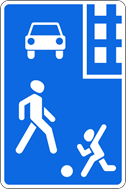
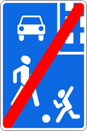

17. Движение в жилых зонах
изменения от 8 апреля 2020
17.1. В жилой зоне, то есть на территории, въезды на которую и выезды с которой обозначены знаками 5.21 и 5.22 , движение пешеходов разрешается как по тротуарам, так и по проезжей части. В жилой зоне пешеходы имеют преимущество, однако они не должны создавать необоснованные помехи для движения транспортных средств.

Знак 5.21

Знак 5.22
17.2. В жилой зоне запрещаются сквозное движение механических транспортных средств, учебная езда, стоянка с работающим двигателем, а также стоянка грузовых автомобилей с разрешенной максимальной массой более 3,5 т вне специально выделенных и обозначенных знаками и (или) разметкой мест.
17.3. При выезде из жилой зоны водители должны уступить дорогу другим участникам движения.
17.4. Требования данного раздела распространяются также и на дворовые территории.